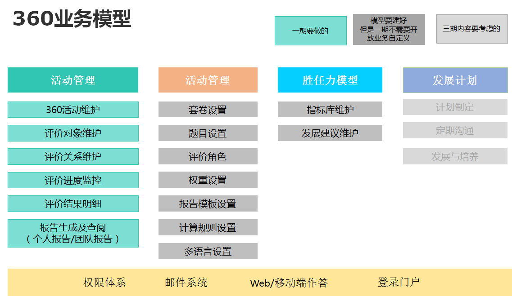
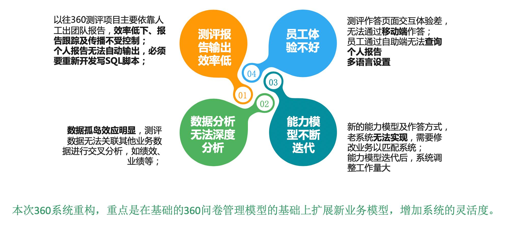

二、目前东软360评估系统存在的问题

1、个人报告及团队报告的自动生成；
2、移动端测评；
3、问卷的高级管理（包括计算指标的规则设定、多模板多套卷管理）
4、多语言管理(包括问卷、报告)；
5、加强HR端运营监控能力（进度控制、催办等）
6、数据沉淀，为一体化人才数据分析做准备；
暂时不考虑的场景：
1、系统先给集团用，因此复杂数据权限管控相关内容暂不考虑，等EHR的平台搭建好以后，能基于平台的权限体系进行统一授权。
三、围绕当前业务面临的困难，新的360评估系统重点要解决的问题：
一、360系统简介
360 度评估反馈系统是在线对问卷设计、发放、追踪、回收、数据分析和出具报告的全流程进行管理的一套系统。
四、360评估系统业务模型